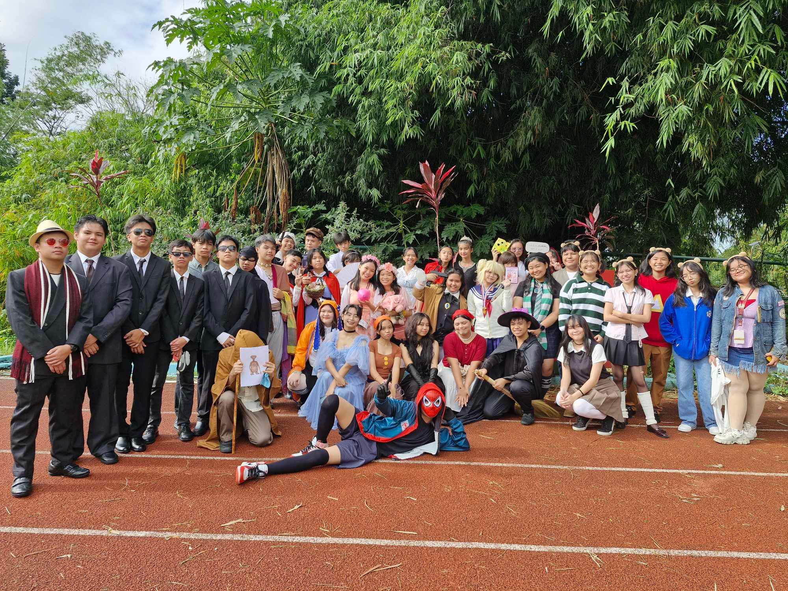

Diary
Below is a diary of entries containing images and videos of our 2nd quarter activities
including descriptions of each activity.
|  | Book Parade I dressed up as Greg Heffley from Diary of a Wimpy Kid. My costume was extremely last minute and all Greg wore was a white shirt and black shorts! I also made two props: The Cheese Touch and a Chat Bubble. |
| Historical Figure Our figure was Rosa Parks, an American activist in the civil rights movement. Our representative was Dewi! This picture was taken right before the program started. We sadly didn't win anything but the process of making her dress was a great experience! |
 |
Book Icon Our representatives were Chanel and Arkin. They both played a character from Seraph of the End (manga series): Chanel as Krul and Arkin as Mikaela. |
| VPop Practice This is one of our many vpop practices! We already finished our choreography. I'm not a dancer since I'm a part of the Props Dept. so I was able to take a picture of the dancers practicing! |
 |
 |
Instruments This is a cool picture I found of the instruments people practicing! The ones playing for our VPop will be Thirdy, Mikha, and Christian. |
Intramurals '24 - '25 This is a little video I filmed during the lighting of the torch at the opening of our school's intrams! It was very lively that day and the court was filled with the students shouts of excitement! |
| Historical Figure This is a video of our historical figure again, this time it's during the program! As you can see, my class was really loud, which is a good thing! |